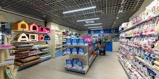

Day 1: Setting Up the Shop
January 1, 2024
Today was a big day! I officially started setting up LozadaLuis Animal Shop. It's been a dream of mine to provide a trusted store for pets, pet supplies, and expert care tips. I spent the day organizing the initial inventory of high-quality pet food and supplies. I also set up the website to start sharing helpful pet care advice.